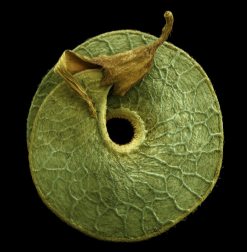
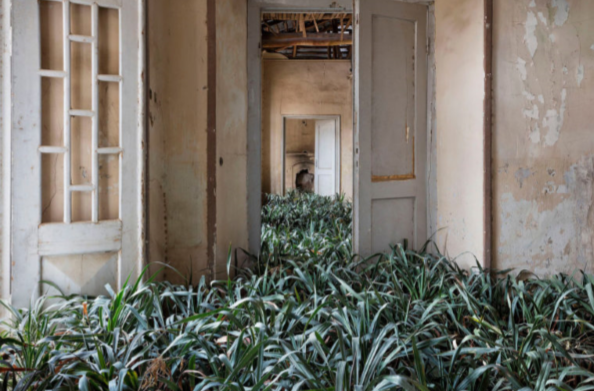

Plants
17.Carved and Embroidered Leaves —Hillary Fayle

1. Night Fall Trees — Adam S. Doyle

2. Medicago arborea — Rob Kesseler
3. Nepenthe lowii — Helene Schmitz
4. Lush Botanical Forms Translated Into Abstract Embroideries — Helen Wilde

5. Home — Gohar Dashti
6. Houseplants Become Hairstyles — Abby Ozaltug
7. Garden Room — Nitin Barchha and DIsney Davis
8. House for Trees — Vo Trong Nghia Architects
9. Greenhouses — Ana Frois
10.Point of Origin — Tiffany Bozic
11.Strange Leaves — Al Mefer

12.The Kibble Palace — India Hobson and Magnus Edmondson
13.Grow — Frank Plant
14.Grasslands Repair — Mauro Baracco, Louise Wright, and Linda Tegg

15.Insect-Shaped Arrangements — Raul Inoue
16.Golden Memory — Janis Miltenberger
Return